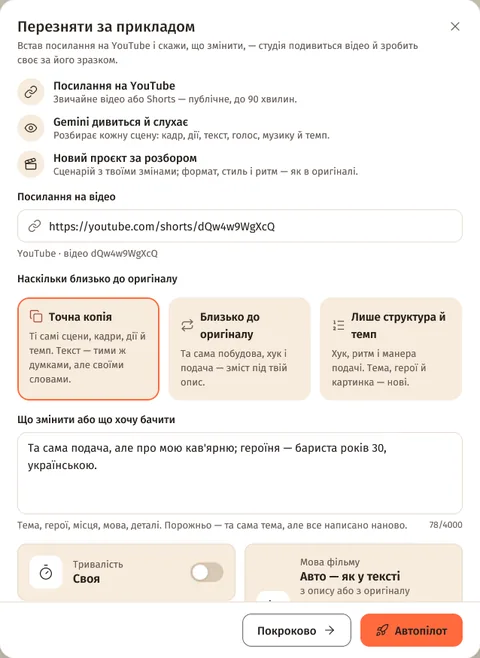
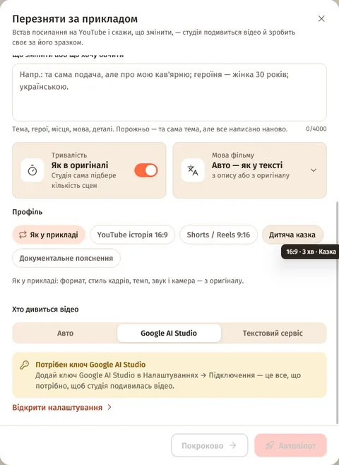
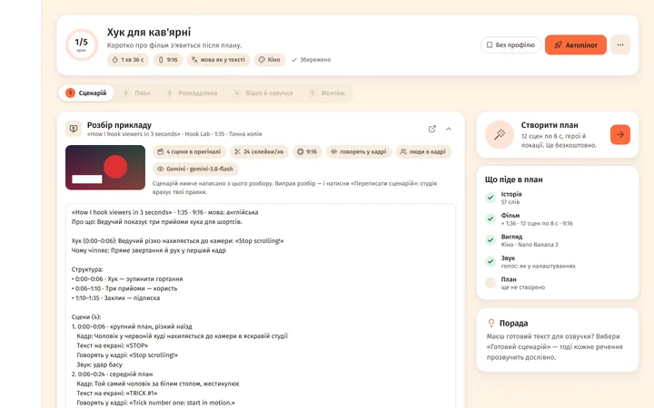

Що потрібно
- Ключ Google AI Studio — Налаштування → Підключення → «Google AI Studio». Створити ключ: aistudio.google.com/apikey.
- Замість нього може підійти текстовий сервіс, якщо він уміє дивитися YouTube, — студія перевіряє це сама.
- Публічне відео YouTube до 90 хвилин — звичайне або Shorts.
Нічого не завантажується на твій комп'ютер: Gemini дивиться відео просто з YouTube. Студія зберігає лише мініатюру й розбір.
Як запустити
- Головна → «Швидкі дії» → «За прикладом». Або «Новий проєкт» → «Перезняти за прикладом».
- «Посилання на відео» —
youtube.com/watch?v=…,youtu.be/…або Shorts. - «Наскільки близько до оригіналу» — «Точна копія», «Близько до оригіналу» (типово) або «Лише структура й темп».
- «Що змінити або що хочу бачити» — тема, герої, місця, мова, деталі. Порожньо — та сама тема, але все написано наново.
- «Тривалість» — «Як в оригіналі» (студія сама підбере кількість сцен) або «Своя».
- «Мова фільму» і «Профіль»: «Як у прикладі» — формат, стиль кадрів, темп, звук і камера з оригіналу; твій профіль — стиль кадрів, голос і монтаж із профілю.
- «Хто дивиться відео» — «Авто», «Google AI Studio» або «Текстовий сервіс».
- «Автопілот» — до готового відео. «Покроково» — розбір і сценарій, далі ти сам.


Що далі: розбір і сценарій
Відкриється проєкт «Перезйомка за прикладом». На кроці «Сценарій» — картка «Розбір прикладу»:
- «Перевіряю посилання»
- «Gemini дивиться й слухає відео»
- «Пишу сценарій за розбором»
Проєкт можна закрити — робота триває у фоні, прогрес є в «Черзі». Коли готово, видно мініатюру, факти (скільки сцен в оригіналі, склейок за хвилину, формат, звук, хто в кадрі) і текст розбору: хук, структура, кожна сцена з кадром, текстом на екрані, голосом і звуком.

- «Переписати сценарій» — студія напише сценарій наново з твоїми правками в розборі.
- «Подивитися ще раз» — новий перегляд відео; правки в розборі зникнуть.
- Далі — «Створити план», як у звичайному проєкті. З автопілотом студія йде до готового відео сама.
Як працює точність
| Варіант | Що береться з оригіналу | Що нове |
|---|---|---|
| «Точна копія» | Ті самі сцени, порядок, тривалості, плани, рухи камери, дії, текст на екрані й темп. План іде за сценарієм кадр у кадр. | Текст — тими самими думками, але своїми словами. |
| «Близько до оригіналу» | Побудова, хук, типи кадрів, темп і подача. | Тема, деталі, герої й місця — під твій опис. |
| «Лише структура й темп» | Схема хука, ритм склейок і манера подачі. | Тема, герої й картинка. |
- Твоє побажання завжди важливіше за приклад.
- Речення не копіюються (цитата — до 8 слів); без реальних впізнаваних людей, логотипів і брендів.
- Сцен = тривалість ÷ довжина кліпу з налаштувань (до 150). Кожна сцена перезнімає свою частину оригіналу.
З телефона
У Telegram-боті — «🔁 За прикладом» або /remake: посилання → побажання (або «Без побажань») → «🎯 Точність», «⏱ Тривалість», «👤 Профіль», «🔀 Режим» → «▶️ Запуск». Типово — автопілот до готового відео.
Обмеження
- Лише публічні відео. Приватні, «доступ за посиланням», з віковим обмеженням, видалені й незавершені трансляції не підходять — студія скаже одразу, ще до перегляду.
- До 90 хвилин. До 12 хвилин Gemini дивиться за раз, довші — частинами по 10 хвилин (після 30 хвилин — у зниженій якості).
- Безкоштовний ключ Google — до 8 годин YouTube на день. Вичерпано — студія візьме інший ключ (вичерпаний відпочиває добу) або попросить спробувати пізніше.
Питання
Скільки це коштує?
Перегляд іде на твоєму ключі Google AI Studio (безкоштовний — до 8 годин YouTube на день). Сценарій пише твоя текстова модель. Далі — звичайні кадри, кліпи й озвучка, як у будь-якому проєкті.
Можна взяти лише частину довгого відео?
Ні, студія дивиться відео повністю (до 90 хвилин). Хочеш коротший фільм — вибери «Тривалість» → «Своя»: сцени розподіляться по всьому оригіналу.
Що, як Gemini не зміг подивитися відео?
Перевір, що воно публічне, і натисни «Спробувати ще раз» — студія продовжить з того ж місця. Якщо вже є розбір, лишиться дописати сценарій.